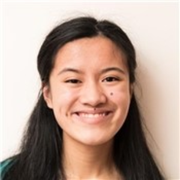
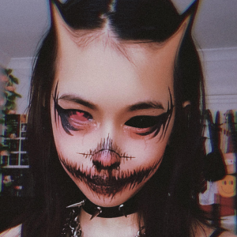
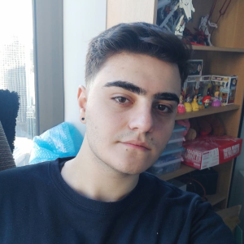
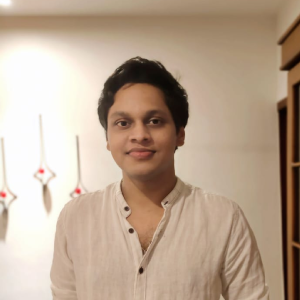
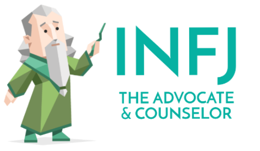
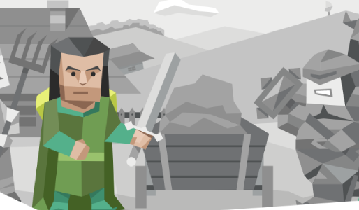
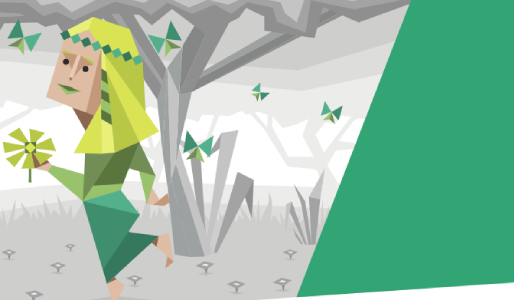
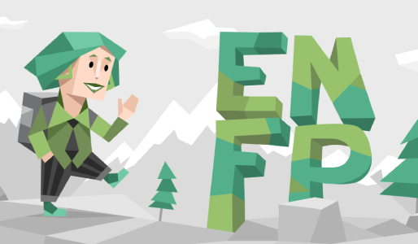

Profile

Personal Information
Carissa Eleanor Imperial
 NAME = Carissa Imperial
STUDENT NUMBER = s3971782
AGE = 19 years old
CULTURE = Filipino
DEGREE = Bachelor of IT
HOBBIES = reading and writing books, baking, drawing and playing the violin
INTEREST IN IT = I am interested in IT because I would also like to be an author, and I need a job that can support me financially while I write books - hence, I would love to be a librarian (which requires an ALIA -Australian Library Information Association- accredited IT degree) because it is also a book-related job. I didn’t have much IT experience prior to taking Bachelor of Information Technology at RMIT, besides some junior IT classes in high school
If you want to find out more personal information about Carissa: Introduction to IT - Assignment 1: My Profile (srmitit.github.io)
Aung Kyaw Zan (LIAM)
Name = Aung Kyaw Zan
Student Number = s3835985
Age = 21
Culture = Burmese
Degree = Bachelor of Information Systems
Hobbies = Travelling, trying out exotic food, and playing video games
Interest in IT = My interest in the IT field began with my first purchase of my PC. Having access to such a machine back then opened up countless doors in my love for IT. I want to become a Business Analyst, which is a good stable job that will utilize my passion for coming up with technological solutions for a business and working with various departments.
For more information about Aung Kyaw Zan visit here: https://liam-zan.github.io/assignment-1/
Jazmin Engle
 NAME : Jazmin Engle
STUDENT NO : s3849554
AGE : 20
BACKGROUND : Filipino
DEGREE: Bachelor of Design
HOBBIES : video games, shopping, self expression
INTEREST IN IT : I have always been interested in computers and programming, having taken every computing class available through all stages of my education, but have been too intimidated to commit to Computer Science courses. My two passions in life are art and technology and to find a career that marries both aspects would constitute my dream job.
For more info visit: https://unins0001.github.io/COSC1078/
Emre Erdogan
Name: Emre Erdogan Student Number: s3858871 Age: 21 years old Culture: Turkish and Kurdish Degree: Bachelor of Information Systems Hobbies: I like playing video games and reading books in my spare time Interest in IT: My interest for IT began in my high school years when I decided to take classes regarding programming and learning about the digital environment. What made me want to one day work in a field regarding IT was my internship that I took at a digital marketing agency. Ever since then I’ve wanted to take the field of using digital tools to advertise and work with some of the largest companies in the world. To support my interest I also acquired google certificates and took udemy courses.
For more information about Emre: https://emre-erdogan-student.github.io/COSC1078-IIT-A1/
Hashitha Shanal Gunaratne
 Name: Hashitha Shanal Gunaratne
Student Number: s3967899
Culture: Sinhalease
Degree: Bachelor of IT
Hobbies: I like playing basketball, reading novels, and studying photography.
Interest in IT: Last year I gained my passion for IT after completing a scholarship program that required the creation of a simple robotic car and programming it. Currently, I am passionate about programming. I find the creation and implementation of software satisfying. I have just started my journey to become a software developer therefore, I look forward to my journey of gathering experience for it.
For more information about Hashitha Shanal Gunaratne: https://shanalgunaratne.github.io/My-Profile-Shanal/
Personality
Carissa Eleanor Imperial
 16 PERSONALITIES:
TEST RESULT = INFJ-T
TEAMWORK STRENGTHS = creativity, insightfulness and passion
TEAMWORK WEAKNESSES = sensitivity to criticism, perfectionism and reserved nature
LEARNING STYLE:
TEST RESULT = visual learner
AULIVE CREATIVITY TEST:
TEST RESULT = not very creative
For more information about team profile of Carissa visit: Personal Profile (srmitit.github.io)
Aung Kyaw Zan (LIAM)
 16 PERSONALITIES:
TEST RESULT = Protagonist (ENFJ-A)
TEAMWORK STRENGTHS = Receptive , Reliable and Passionate
TEAMWORK WEAKNESSES = Unrealistic, Overly Idealistic, Condescending
LEARNING STYLE:
TEST RESULT = Auditory Learner
Truity Test Result: High conscientiousness and agreeableness
For more information about team profile of Aung Kyaw Zan visit: https://liam-zan.github.io/assignment-1/
Jazmin Engle
 16 Personalities : INFP
Pros: empathetic, generous, open minded, creative, passionate and idealistic.
Cons: Unrealistic, self isolating, unfocused, emotionally vulnerable and self critical.
Learning style: visual
Creativity: 75.07
For more information about team profile of Jazmin Engle visit: https://github.com/Unins0001/COSC1078
Emre Erdogan
 16 Personalities:
Test Result: Campaigner
Teamwork Strengths: Curious, Perceptive, Enthusiastic, Excellent Communicators
Teamwork Weakness: People-Pleasing, Unfocused, Disorganized
Learning Style: Test Result: Visual Learner
Test My Creativity:
Test Result: 52.09 not a creative person
For more information about Emre’s personality: https://emre-erdogan-student.github.io/COSC1078-IIT-A1/
Hashitha Shanal Gunaratne
Test Result: Diplomat - INFJ-A
-Teamwork Strengths: creativity, empathising, Idealistic, and passion
-Teamwork Weakness: sensitive to feedback, being cautious to share, and getting easily exhausted
Learning Style: Test Result: Visual Learner
Test My Creativity: Test Result: 71.52
For more information about Shanal personality: https://shanalgunaratne.github.io/My-Profile-Shanal/